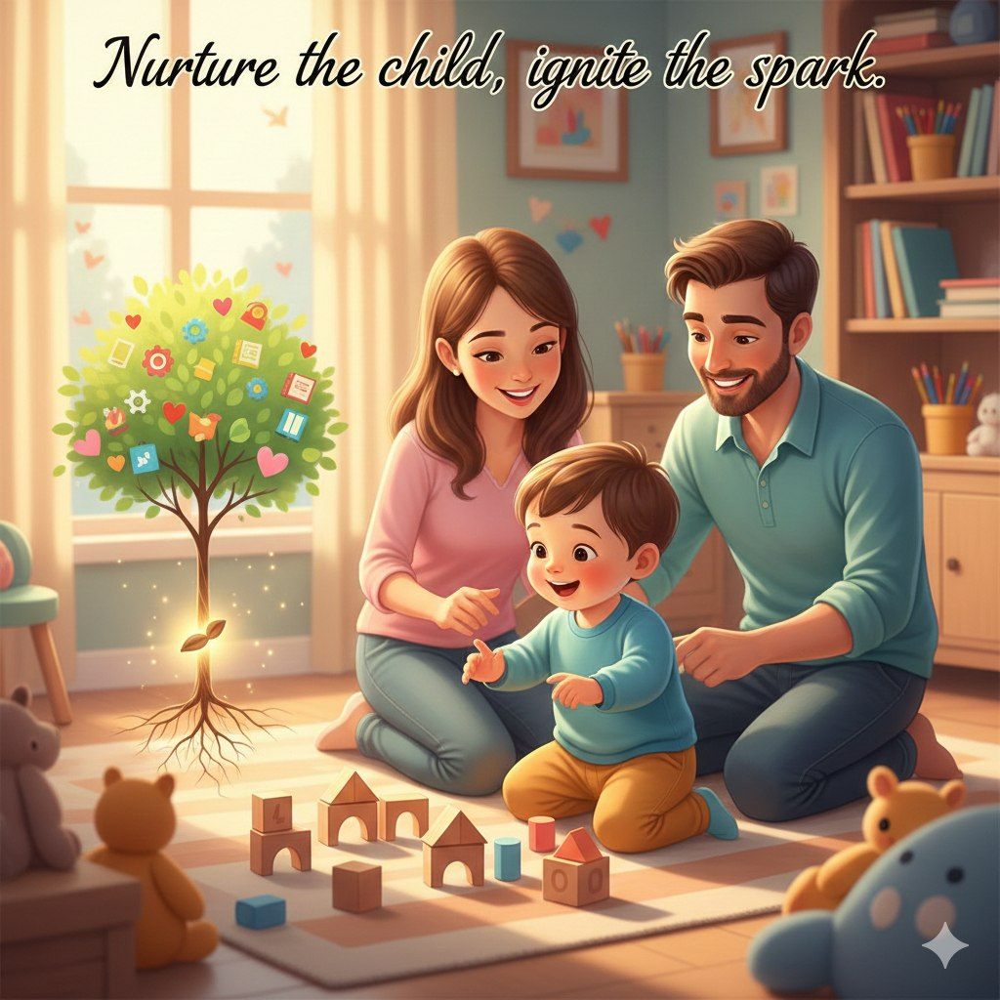

ماذا تقدم المنصة؟
المنصة معمولة علشان تساعد الأهل يفهموا الطفل خطوة بخطوة: مرحلة عمرية → مشكلات شائعة → تفسير واضح → حل عملي. كل ده بنظام منظم مبني على تقسيم بورتاج كل 6 شهور.

إيه اللي هتستفيده من المنصة؟
بدل ما تلفّ بين نصايح متفرقة… هنا كل حاجة مترتبة حسب عمر الطفل، وبتجاوب على: ليه السلوك ده بيحصل؟ أتصرف إزاي؟ وإيه الخطة العملية؟
مراحل بورتاج (كل 6 شهور)
اختيار عمر الطفل بدقة للوصول للمحتوى المناسب بسرعة.
مشكلات كل مرحلة
لكل مرحلة مجموعة مشكلات شائعة (نوم/بكاء/سلوك/لغة… إلخ).
شرح + حل عملي
كل مشكلة فيها: أعراض + أسباب + حل خطوة بخطوة + ملاحظة مهمة.
أنشطة بالصور
أنشطة تدريبية عملية لتنمية مهارات الطفل في البيت.
ملفات PDF
أوراق عمل وأدلة قابلة للطباعة (هنضيفها تدريجيًا).
تواصل / استشارة
لو عندك حالة خاصة: ابعت عمر الطفل + وصف المشكلة + مثال.
المنهج اللي ماشيين عليه (ببساطة)
الفكرة إنك ما تتوهش: تبدأ من عمر الطفل، تدخل المرحلة، تشوف الأقسام والمشكلات، تختار المشكلة، فتلاقي محتوى مرتب يساعدك تطبق فورًا داخل البيت.
اختار المرحلة
من صفحة المراحل العمرية (تقسيم بورتاج).
اختار المشكلة
هتلاقي مشكلات مقسمة لأقسام داخل المرحلة.
اقرأ وطبّق الحل
أعراض + ليه بيحصل + حل عملي + ملاحظة.
جاهز تبدأ؟
ابدأ من اختيار مرحلة الطفل، وبعدها اختار المشكلة اللي بتواجهك.